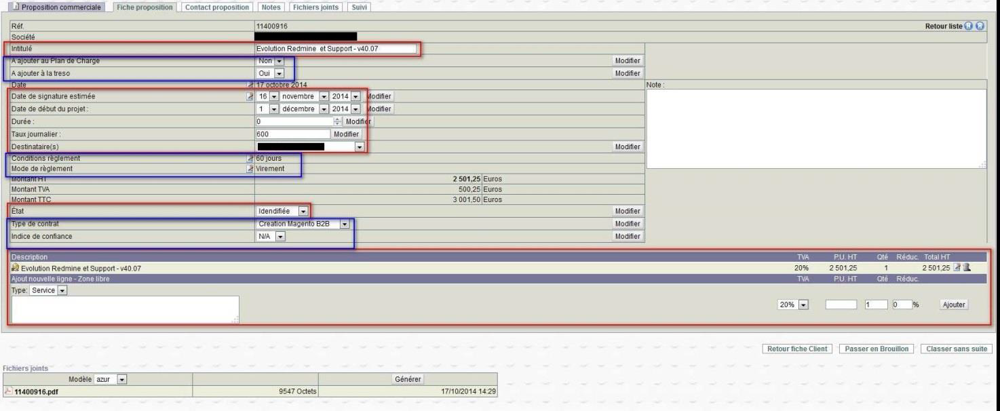
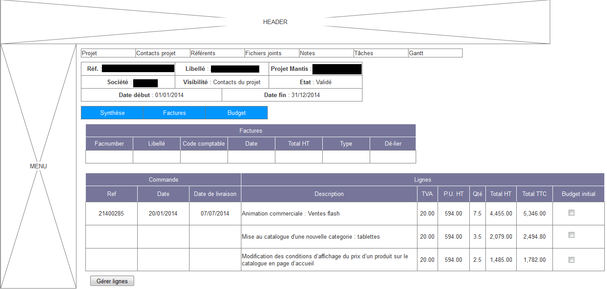
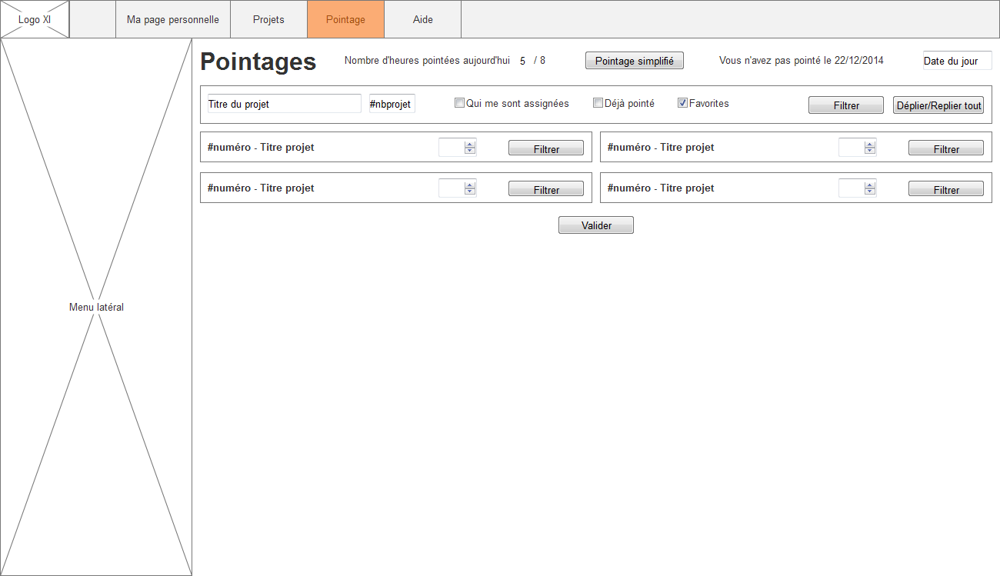
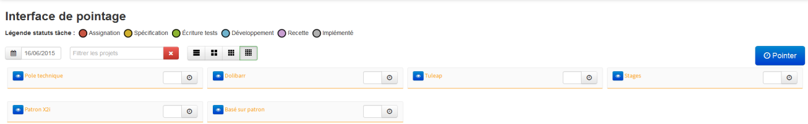
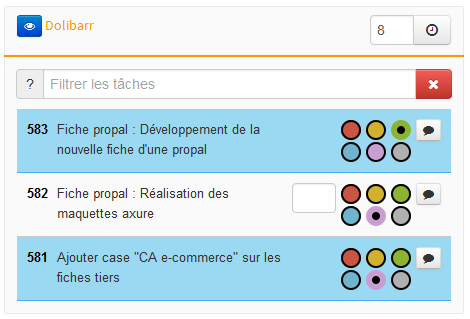

Par Julien Fradin, le 30 juin 2015.
Stage effectué du 1er Septembre 2014 au 29 Juin 2015.
Sous la responsabilité de Guillaume Chaffarod (ingénieur études & développement).
But de l'alternance : Professionnaliser l'étudiant afin qu'il soit opérationnel.
Entreprise experte en e-commerce.
Créée en 2004.
2008 : Certification Enterprise Partner Magento.
2009 : Spécialisation stratégique B2B.
2015 : Xi Ingénierie devient X2i.
À l'origine, rejoindre les équipes de développement.
Mais…
Changement de sujet.
Travailler sur les outils internes.
ERP open source écrit en PHP.
Refonte d'une interface graphique : améliorer l'ergonomie.
Amélioration des compétences en UX et UI.
Quelques déboirs…

Exporter les propositions commerciales vers un fichier Excel.
Garder la liste des filtres.
Séparer les différents tableaux.
Maquette avec Axure, vue en onglets et en accordéon.
Vue en onglets retenue, développée en JavaScript.

Retour vers la propale…
Beaucoup d'évolutions en peu de temps.
Nouvelle fonctionnalité à Dolibarr.
Outil de gestion de projets.
Possibilité de rajouter des outils de suivi…
Et de créer des plugins.
Devait être un plugin Tuleap.
Devait se baser sur les outils de suivi.
Pointage par projets.
Interactive et intuitive.

Utilisation d'un framework JavaScript.
ReactJS retenu, auto-formation.
Découpage du code en modules.
Compilation avec webpack.
Environ 11 modules.
Communication avec Tuleap : +400 lignes.
Rédaction d'un developer welcome pack.
Écriture de TPs pour Tuleap.
Mise en place d'une structure.
Outil avancé de gestion de plugins Tuleap.
Permet l'utilisation de scripts avant des actions.


Expérience enrichissante professionnellement.
Acquisition de nouvelles compétences.
Découvertes de méthodes de travail en entreprise.